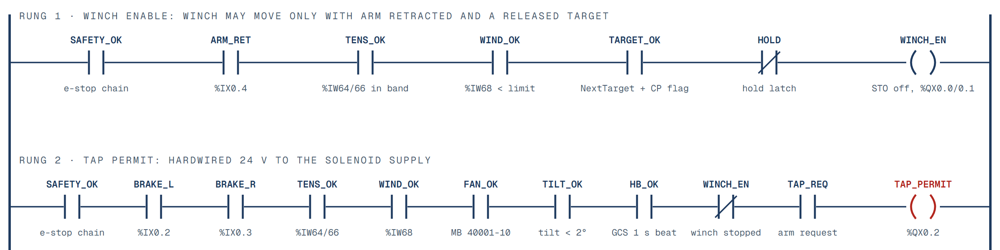
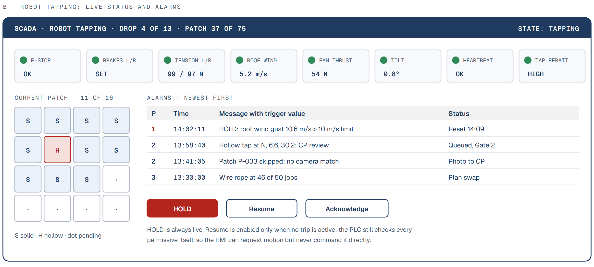

ENG4101C ROBOTICS AUTOMATION INTEGRATION · GROUP 5
Robotic façade inspection for high-rise homes
A drone survey and a wall-tapping robot, joined into one inspection system for Singapore's Periodic Façade Inspection.
Good morning. We are Group 5. I am {P1}, and I cover the problem, OPC UA and interfacing. {P2} covers localization, {P3} covers ranging and engineering checks, and {P4} covers forward and inverse kinematics, cost and risk. [Next slide.]
The job today: 30,000 buildings, two checks, every seven years
30,000buildings in the first cycle
Taller than 13 m and older than 20 years. Inspected every 7 years since 1 Jan 2022.
4,300inspections a year
30,000 buildings spread over the seven-year cycle (our estimate).
149 + 140people qualified
Competent Persons and Façade Inspectors when the regime started in 2021.
CHECK 1 · 100% OF THE FAÇADE
Visual inspection
Every elevation, from the ground with cameras and binoculars.
Equivalent method named in the regulations: a drone. Regulation 15(2)(a)(ii), flown by an SAC-accredited provider.
CHECK 2 · AT LEAST 10% OF EACH ELEVATION
Close-range tap test
An inspector taps the wall and listens for a hollow sound. This is the check that puts people at height.
Equivalent method named in the regulations: a robotic tapping device. Regulation 15(2)(b)(ii), with approval from the Commissioner of Building Control.
Sources: BCA media release 21 Oct 2021 [1]; BCA PFI Guidelines v1.3 s. 6.3 and 6.4 [28]; Periodic Inspection Regulations 2021 [42].
Since 2022, every Singapore building taller than 13 metres and older than 20 years needs façade inspection every seven years. That is 30,000 buildings, about 4,300 inspections a year, with only 149 Competent Persons and 140 Façade Inspectors qualified at launch. [→] First is a visual check of every elevation. [→] The regulations already name a drone as an equivalent method. [→] Second is a close-range tap test on at least 10% of each face, listening for hollow tiles. [→] The rules also name a robotic tapper with approval. Nobody has joined both into one system.
Where people hang off the wall
TODAYTwo people in a gondola, tapping by hand.
One drop, repeated across the block
Rig the gondola on the roof
Lower two people down the wall
Tap, listen, write notes and take photos
De-rig, move along the roof, start again
42person-hours suspended beside the façade, per inspection
3 days × 7 hours × 2 people on our reference block: 20 storeys, 60 m high, 30 m long, 20 m wide (our estimate).
This is the tap test today on our 20-storey reference block: 60 metres high, 30 long and 20 wide. [→ ×4, one per step.] A crew rigs a gondola on the roof, lowers two people down the wall, taps and notes by hand, then de-rigs and moves along for the next drop. [→] We estimate about three days of this: two people, seven hours a day, 42 person-hours hanging beside the wall every seven years, leaving notes and photos with no exact position.
Six pain points, each with a number
Click a card.
The template asks for six pain points, and we put a number on each. [→ lights first three cards.] Safety: falls from height killed four workers in 2024, and over 90 façade parts fell in three years. Quality: tapping is judged by ear, and manual visual checks covered only 40 to 60% of the wall. Time: one to five days on site, plus up to ten for the report. [→ lights next three cards.] Manpower: 29 buildings a year per Competent Person. Downtime: a rig and cordon for every drop. Cost: S$21,700 per block, our baseline to match.
What we set out to do, and how we will know
Five objectives
Digitise the visual check with a drone and a façade model
Give the Competent Person one whole-building view
Automate the tap test with our SCARA arm on a cable robot
Take people off the façade for flat areas
Keep the Competent Person in control, with two approval gates
Success criteria
Image detail
1.5 mm per pixel or finer (BCA)
Visual coverage
at least 95% of the façade
Tap coverage
at least 10% per elevation, plus every flag on flat areas
People at height
0 person-hours suspended for flat areas
Traceability
100% of images and taps tied to a grid cell
Cost
no more than S$21,700 per block
Each target has an acceptance test after deployment, and each baseline its data source (proposal Table 1, test V10).
So we set five objectives: digitise the visual check, give the Competent Person one whole-building view, automate tapping with our SCARA arm, take people off flat walls, and keep the Competent Person in control. [→ reveals first three criteria.] Our first three targets: images at 1.5 millimetres per pixel or finer, at least 95% visual coverage, and at least 10% tapped on every elevation. [→ reveals next three criteria.] Next: zero person-hours suspended on flat areas, 100% grid traceability, and cost no higher than S$21,700 per block.
One system: seven elements on one shared grid
ENG4100CDroneFlies the route and photographs every elevation
ENG4100CFaçade model + AIStitches the images and flags defects
PERSONCP Gate 1Approves the tap targets
ENG3106CCarrier PLC + winchesLowers the platform; holds the interlocks
ENG3107CSCARA armTaps a 16-point patch with controlled force
PERSONCP Gate 2Reviews every hollow result
PFI reportFiled by the Competent Person
SHARED GRIDEvery image, flag and tap carries the same position: elevation, X and Z in 200 mm × 200 mm cells. The drone's output is the robot's input.
OPC UA + SCADAOne gateway, one database, one dashboard for both robots. It monitors and alarms. It never commands motion.
HARDWIRED TAP PERMITA 24 V line from the PLC cuts power to the hammer. No software can bypass it.
This is the whole system in seven boxes. [→ ×7, one per box.] A drone photographs every elevation. Software stitches the façade model and AI flags possible defects. At Gate 1 the Competent Person approves tap targets. The roof PLC lowers the platform, our SCARA arm taps, and Gate 2 reviews every hollow result before the report is filed. [→] Three rails tie it together. First, one shared 200 millimetre grid, so the drone's output becomes the robot's input. [→] Second, one OPC UA data layer. [→] Third, a hardwired 24 volt tap permit. The colours show all three course units in the design.
OPC UA: one address space for both robots
Our unified information model on OPC UA for Devices (no drone companion spec exists; OPC 40010-1 Robotics is closest). OPC UA monitors and alarms only — it never commands motion.
ADDRESS SPACE · CLICK A NODE
Objects → PFI_System
Drone_M350
Carrier_PLC
Platform_SCARA
Mission_Gates
FIVE OF SIXTEEN INTERFACES
Link
How
Rate
If it fails
Drone ↔ ground station
Encrypted radio
10 Hz
Lost for 3 s: hover, then the pre-set lost-link action
Ground station ↔ PLC
OPC UA, signed and encrypted
500 ms, heartbeat 1 s
3 missed heartbeats: brakes on, arm retracted
PLC ↔ arm
Hardwired 24 V permit + Modbus TCP
10 ms scan
Permit low: arm retracts within 200 ms
Sensors → PLC
4–20 mA, safety inputs
10 ms scan
Below 3.6 mA is treated as a fault: hold
Gateway → SCADA
OPC UA over TLS
500 ms
Site keeps running; data is buffered
Safety trips are local: they run in the PLC in under 100 ms and never wait for the network. · The dashboard never drives: SCADA shows and alarms; motion goes to the PLC while every interlock is healthy.
500 ms publishing (A); alarms sent as events with the trigger value. Tap permit stays a hardwired 24 V line.
Proposal v12, Integration approach: all 16 interfaces (Table 16) and the 8 tap-path messages (Table 17). Rates marked (A) are design targets.
To join both robots into one dashboard, one OPC UA gateway exposes Objects, PFI System, with four folders: drone, carrier PLC, SCARA platform and mission gates. [Click TapResult and TapPermit.] OPC 40010-1 Robotics is closest, but no drone companion spec exists, so we built on OPC UA for Devices. Status publishes every 500 milliseconds over TLS, and alarms fire as events with trigger values. [Click "Interfaces" tab, then back to "Address space".] The Interfaces tab shows five of our sixteen links with rate and failure action. Two rules hold: safety trips run locally in the PLC under 100 milliseconds, and the dashboard never drives motion. [Click "Call ApproveTargets".] Gate 1 calls ApproveTargets with a 5 second timeout. [Click "Stop heartbeat" and count 1, 2, 3.] Three missed 1 second heartbeats latch HOLD: brakes on, arm retracted, hardwired 24 volt permit low.
Step 2: the Competent Person chooses where to tap
The stitched façade model, with AI flags. Click the wall to add or remove a tap strip. Each strip is 0.8 m wide and runs the full height.
0.0%of this elevation tapped. BCA minimum is 10%0 of 6flags inside a strip0drops on this face, 30 min of rigging each
The robot stays idle until the list is approved.
Full Gate 1 screen: proposal Figure 10.
Here is that ApproveTargets call on the Competent Person's screen: the stitched elevation with amber AI flags. The rule is at least 10% of each elevation and every flag on flat wall. [Click "Place strips through the flags", or press →.] Each strip is 0.8 metres wide from roof to ground. Four strips clear 10%. One stray flag costs 30 minutes of rigging, so a person can route it to manual check. [Click "Approve targets", or press →.] Approval sends ApproveTargets over OPC UA; without it, the PLC will not move the winch.
The logic behind the safe state


Proposal Figures 8, 9 and 10. Screen values are illustrative.
Once approved, plain PLC logic guards winch and hammer. [Ladder logic is showing.] Rung one moves the winch only with arm retracted, wind and tension safe, and no hold. Rung two grants the hardwired permit with brakes set, fans, tilt and heartbeat healthy. [→ Tap cycle states.] Six states, one safe hold. [→ Operator screen.] Every permissive as a lamp. Over to {P2} for localization. [Hand over.]
Step 1: the drone surveys every elevation
15 mstandoff, held by LiDAR range to the wall1.32 mm/pxwith a 50 mm lens. BCA asks for 1.5 or finer10.8 × 7.2 meach photo, with 70% and 60% overlap21 linesper elevation, 2.86 m apart650 imagesfor the block, about 30 min of flying
Live on this elevation
Image 0 of 193Covered 0%
Why 15 m? Closer gives more detail but less margin. 17 m is the furthest that still meets 1.5 mm per pixel. The drone stops in about 0.9 m.
Flown by an SAC-accredited provider. The drone design comes from our ENG4100C project, adapted here to 15 m and a mapping camera.
Thank you. I cover localization, starting with the drone survey. You are watching it work down one elevation in 21 horizontal lines. Each orange patch is one photo, 10.8 by 7.2 metres, with blue showing coverage and rings showing what AI has flagged. At 15 metres from the wall, a 50 millimetre lens delivers 1.32 millimetres per pixel, inside BCA's 1.5 limit. [→] We chose 15 metres because 17 is the furthest that still meets 1.5, while the drone stops in about 0.9 metres. One block takes about 650 images and 30 minutes of flying. [→] An SAC-accredited provider flies our adapted ENG4100C drone with a mapping camera.
One drone, two rotations, one working frame
Measure on the drone, rotate onto the local chart, then rotate onto the Earth. Each arrow is one rotation matrix.
Drone body (b)
Fixed to the airframe: x forward (nose), y right, z down
Gyros, accelerometers, LiDAR report relative to the drone.
Problem 2.2
Rbn
→
yaw ψ, pitch θ, roll φ R = Rz Ry Rx
Local NED (n)
Flat chart at the work site: north, east, down
Flight route, waypoints, position and velocity over ground.
Problem 2.3
Rne
→
latitude μ, longitude l
Earth ECEF (e)
Centre of the Earth, turns with the Earth: X, Y, Z
What RTK GNSS outputs. One frame for every cycle.
IMU/VO (body)Rbn→NED, the working frame←(Rne)TRTK GNSS (ECEF)
Control: position error is worked out in NED, then rotated into the body frame with the transpose (Rbn)T, so the motors know which way to tilt.Surveyed point: fixing NED to the same surveyed point on the block each cycle lets the 7-year surveys line up (model error ≤ 5 cm).
Columns of each matrix are the old frame's axes written in the new frame.Check: speed never changes, only its description.
ENG4100C Localization 1 · Practice Set 2, Problems 2.2 and 2.3; undo a rotation with its transpose. Proposal v12 (surveyed check points, model error ≤ 5 cm).
To fly that route, the drone links three frames with two rotation matrices. Onboard gyros, accelerometers and LiDAR measure in the body frame: x forward, y right, z down. First, R from body to NED rotates body readings onto a local north, east, down chart using yaw, pitch and roll. Second, R from NED to ECEF rotates onto Earth-centred X, Y, Z using latitude and longitude, matching RTK GNSS. Inside the controller, NED is the working frame: IMU and visual odometry rotate in via R b to n, while RTK GNSS rotates in via the transpose of R n to e. Position error is worked out in NED and rotated back to body via the transpose. Fixing NED to one surveyed point keeps seven-year surveys aligned within 5 centimetres.
Three single turns make Rbn
Rz · yawturn about z; 1 bottom-right
×
Ry · pitchturn about y; 1 in the centre
×
Rx · rollturn about x; 1 top-left
=
Yaw, then pitch, then roll. Columns are the drone's nose, right side and belly, written in N, E, D.
Shaded: the only cells each angle changes.Pitch is the odd one out: its minus sign sits below the diagonal.
Dashed: fixed N, E, D. Solid: the drone's own axes.
Problem 2.2 · fx-991ES PLUS: MatA = Rz, MatB = Ry, MatC = Rx, then MatA × MatB × MatC =
Here is how R from body to NED is built from three single-axis turns: yaw about z, pitch about y, and roll about x. In each 3-by-3 matrix, the shaded cells are the only four entries that change, and the 1 sits on the axis that stays still. Pitch is the odd one out: its minus sign sits below the diagonal. [Drag yaw to 90, then back to 30.] Multiply R z by R y by R x to get the combined matrix below. Its columns are the drone's nose, right side and belly in north, east and down. [Click "Play the order".] Watch the dashed N, E, D frame stay fixed while the drone turns in order: yaw 30 degrees, pitch 5 degrees up, then roll. Rotations do not commute.
Drone over Singapore: body → NED → ECEF
Step 1Body → NED Problem 2.2
×
=
Step 2NED → ECEF Problem 2.3
×
=
Earth frame: same as GNSS latitude and longitude, as X, Y, Z. A real drone mostly runs this step in reverse, rotating GNSS fix into NED via the transpose.
fx-991ES PLUS: MatA = Rbn, MatB = Rne, MatC = v (3×1), then MatB × MatA × MatC =
Now run real numbers over Singapore: 2 metres a second along the nose, yaw 30 degrees, pitch 5 degrees up, roll zero, at latitude 1.35 degrees north and longitude 103.8 degrees east. In Step 1, R from body to NED multiplies body velocity 2, 0, 0 to give 1.73 metres a second north, 1.00 east and minus 0.17 down. Negative down means a gentle climb. Check the norm underneath: 2.00 metres a second, unchanged. In Step 2, R from NED to ECEF rotates that velocity into Earth X, Y, Z, and the speed stays 2.00 metres a second. [Drag latitude or longitude, then click "Reset to worked example".] Moving around the globe changes ECEF components because north and down point differently on a sphere, but speed never changes. In flight, RTK fixes run Step 2 in reverse.
Step 3: the robot goes down the wall
We reuse a proven platform
A cable-driven robot from Hong Kong, verified in 5 site trials and used on more than 12 commercial jobs. Cables carry the weight, so it does not rely on suction over cracked tiles.
20 kgplatform and arm, on two cables (98 N each)0.3 m/sfastest winch speed, set by the PLC2 brakesspring-applied, so they hold on power loss104 Nfrom two fans pressing it onto the wall
Height 57 mStep waitingBrakes releasedOn the wall no
shown 10× faster than real
The drone relies on RTK GNSS and local NED, but close to the wall the tapping robot does not use GNSS at all. A roof carrier with two winches and a safety PLC lowers a proven Hong Kong cable platform, verified in five site trials and over twelve commercial jobs. Cables carry the 20 kilogram load, unlike suction which fails on cracked tiles. [Click "Lower to the first target", or press →.] Winch encoders guide descent at up to 0.3 metres a second, shown ten times faster here. At target height, two spring brakes set, two fans press the wall with 104 newtons, and the arm camera aligns to the drone map. Over to {P3} for ranging and engineering checks. [Hand over.]
Ranging: holding 15 m from the wall
Beside a 60 m wall, GNSS error grows normal to the façade — so active ranging holds the standoff while the camera sets the outer limit.
STANDOFF & SKY-BLOCKAGE CHECK
Image detail1.32 mm/px · PASSClearance10.0–12.0 m spare vs 3–5 m minStop checkOK · 0.9 m stop at 1.5 m/s (A)Blocked sky76.0° ahead · ~24% sky hidden
WHY 15 m1.32 mm/px passes BCA's 1.5 mm/px limit (17 m max), with over 3× the 3–5 m minimum clearance.
THREE RANGING LAYERS
LiDAR standoff hold: holds 15 m directly to the wall, needing no GNSS.
H30T laser rangefinder cross-check: compares wall range against RTK and flags |dLRF − dRTK| > 0.5 m for over 1 s (test V3).
Over glazed windows: binocular vision and mm-wave radar guard against specular laser reflections, keeping concrete frames in view.
WHY GNSS ALONE FAILS NORMAL TO THE WALL
At 15 m from our 60 m × 30 m wall, lower floors hide satellites below arctan(60 ÷ 15) ≈ 76° straight ahead — blocking about 24% of the sky on one side, so error grows along the standoff axis.
STOPPING DISTANCE (CAPTURE AT 1.5 m/s)
1.5² ÷ (2 × 2) + 1.5 × 0.2 ≈ 0.9 m (assumed 2 m/s² braking, 0.2 s latency (A)) — inside the 3–5 m minimum clearance [16].
Proposal v12: Technology selection (positioning and sensing), drone design calculations (stopping distance), validation test V3. Zenmuse P1 50 mm lens: 1.32 mm/px at 15 m, 17 m max for 1.5 mm/px. Operational assumptions marked (A).
Thank you. GNSS is weakest right beside a 60 metre wall. At 15 metres standoff, lower floors block satellites up to 76 degrees ahead, hiding about 24% of the sky on one side, so error grows straight toward the wall. Active ranging solves this in three layers. LiDAR holds 15 metres without GNSS. The H30T laser rangefinder cross-checks against RTK and flags any mismatch over 0.5 metres for more than 1 second. Over glass windows, binocular vision and millimetre-wave radar take over. [Drag standoff past 17 m, then back to 15 m.] At 15 metres our 50 millimetre lens gives 1.32 millimetres per pixel, failing beyond 17 metres. At 1.5 metres a second, stopping distance is 0.9 metres, well inside the 3 to 5 metre clearance.
Hollow or solid: every tap starts the same way
10 Npreload before every strike, held by a 1 kHz force loop0.2 Jstrike: a 0.1 kg hammer head at 2 m/s48 kHzmicrophone, 200 ms of sound per tap1.5 sper tap: move, preload, strike, retract
TAP ONE TILE
The force trace must sit in the green band before the hammer fires.
The classifier screens; the Competent Person decides. Every hollow result is reviewed, plus a random 5% of solid ones. Bench target: catch at least 95% of hollow tiles.
From ranging on the drone to acoustic tapping on the wall. A human tapper varies and tires over hundreds of taps; the robot does not. Before every strike, joint 3 presses until the 1 kilohertz force loop holds 10 newtons. A solenoid then fires a 0.1 kilogram hammer head at 2 metres a second, 0.2 joules, recorded by a 48 kilohertz microphone in 1.5 seconds per tap. [Click "Solid".] Top trace shows preload entering the green band; bottom shows a short, bright solid ring. [Click "Hollow".] Hollow tiles ring lower and longer. Traces are illustrative until proven on test panels. [Click "Visibly cracked".] Cracked tiles are never struck, only flagged. [→] The classifier only screens: the Competent Person reviews every hollow tile and a random 5% of solid ones.
When something goes wrong, every fault ends the same way
SAFE STATEBrakes set · permit low · arm retracted
INJECT A FAULT, THEN CLEAR IT
Tap permit lowBrakes –Joint 3 0 mmWind –
Running normally.
After a 2026 autonomous shuttle incident in Punggol, we show the operator the exact trigger and value for every automatic stop.
The robot is tapping. Let us inject two faults and see what happens. [Click "Squall gust".] Wind crosses our 8 metres a second limit. The hardwired permit drops, the arm pulls back, spring brakes hold, and the display states the exact trigger and value. [Click again to clear.] Once wind clears, tapping carries on from where it stopped. [Click "Fan failure".] Losing one fan leaves 55 newtons, below the 69 newtons needed to hold the platform against the strike and wind, so the permit drops immediately. [Click again to clear.] Whether it is wind, a fan, cable tension or emergency stop, every fault ends in one safe state: brakes set, permit low, arm retracted. One safe state is easier to prove than five. [→] Showing the exact trigger and value applies the lesson from the 2026 Punggol shuttle incident.
Three sizing checks that changed the design
POWER DOWN 65 m OF CABLE
The umbilical
Fans and arm need 1.2 kW at the platform.
24 V DC
50 A, loses 45 V. Impossible
48 V DC
can deliver 1.0 kW at most. Not enough
230 V AC
5.3 A, loses 4.7 V (2%). Chosen
HOLDING THE WALL
The fans
Tap reaction
30 N
Preload
10 N
Wind at 10 m/s on 0.4 m²
29 N
× 1.5 margin
104 N, two fans of 55 N
HOW LONG IT TAKES
Tapping time
10% of 6,000 m²
938 patches
× 54 s each
14.1 h
13 drops × 30 min
6.5 h
Total
20.6 h ≈ 3 site days
HONEST RESULTThe robot is not faster than today. It is safer, consistent and recorded.
Three sizing calculations shaped our design. [→ ×3] First, power down 65 metres of cable for 1.2 kilowatts. At 24 volts DC, line drop is 45 volts: impossible. At 48 volts, maximum delivery is 1 kilowatt: not enough. So we send 230 volts AC at 5.3 amps with a 2% drop. [→ ×4] Second, wall-press fans. Tap reaction is 30 newtons, preload 10, and 10 metre a second wind 29: 69 newtons total. With a 1.5 margin, we need 104 newtons from two 55 newton fans. [→ ×4] Third, time. Ten percent of 6,000 square metres is 938 patches at 54 seconds plus 13 drops: 20.6 hours, about three site days. [→] The robot is not faster than today; it is safer, consistent and recorded.
What else we considered, scored against the requirements
Suction grip fails on cracked tiles; a drone cannot hold steady while striking
Tapping arm
3-joint SCARA 4.00
Gantry 3.60 · 6-axis arm 3.45
Stiff along the tap; light enough for a 20 kg platform
Robot positioning
Winch encoders + arm camera 4.45
RTK on the platform 3.05 · total station 3.05
The wall blocks about a quarter of the sky
Tap sensing
Force-controlled solenoid + microphone 4.15
Ultrasonic probe 3.10 · thermal alone fails the tactile gate
Same contact for every tap
The drone
Hire an accredited provider
Buy: about S$52,000 of hardware
S$2,750 a day, accreditation and pilots included
WEIGHTSSafety 30% · cost 20% · cycle time 15% · reach 15% · payload 10% · maintainability 10%. Moving 10 points between safety and cost changes no choice.
Scores 1 to 5 are the group's engineering judgement, after three pass/fail gates. Proposal Table 10.
We scored every alternative against our requirements after three pass-fail gates, such as a tap permit that does not depend on the network. [→ ×5, one per row.] Safety carries 30% weight. The cable robot scores 3.95, beating manual gondolas kept for ledges, unstable tapping drones, and suction robots that slip on cracked tiles. A 3-joint SCARA scores 4.00: stiff along the tap and light for a 20 kilogram platform. Winch encoders plus camera score 4.45 because the wall blocks a quarter of the sky. Force-controlled tapping scores 4.15, and we hire the drone at S$2,750 a day rather than buy S$52,000 of hardware. [→] Shifting 10 points between safety and cost changes no choice. Over to {P4} for kinematics, cost and risk. [Hand over.]
The arm: why a SCARA, and where it can reach
Two joints turn in the plane of the wall; the third slides straight into it. A SCARA is stiff along that third axis, so the strike goes straight into the wall.
0.70 mfurthest reach, arm straight (L1 = L2 = 0.35 m)0.122 mclosest reach, at the 160° fold limit19 mmspare at the inner points, so the camera must align within 15 mm
Sizing: joint 1 holds 17.2 N·m with the arm level, so we select at least 35 N·m.
Thank you. The subsystem we designed ourselves is this 3-joint SCARA arm. Two rotary joints position the hammer across an 0.8 metre patch; the third slides straight into the wall so the strike stays stiff. [Click top-right point (0.30, 0.30).] At our worked corner 0.30, 0.30, inverse kinematics gives elbow 105.4 degrees and shoulder minus 7.7 degrees. [Click an inner point.] The inner points are tightest. [→] With 0.35 metre links, outer reach is 0.70 metres, and the 160 degree fold limit sets inner reach at 0.122 metres. Inner taps sit just 19 millimetres outside that, so camera alignment must hold within 15 millimetres. [→] Joint 1 holds 17.2 newton metres level, so we select 35.
FK and IK: joint values ⇄ hammer at (x, y, z)
FORWARD KINEMATICS · L1 = L2 = 0.35 m (A) · d3 ≤ 60 mm (A)
x = 0.35 cos θ1 + 0.35 cos(θ1 + θ2)
y = 0.35 sin θ1 + 0.35 sin(θ1 + θ2)
z = d3(extends normal to wall to 10 N preload)
Limits: θ2 ∈ [25°, 160°] · reach 0.122–0.70 m · |det J| ≥ 0.042 m²
Shoulder:θ1 = atan2(y, x) − atan2(L2 sin θ2, L1 + L2 cos θ2) = 45.0° − 52.7° = −7.7° (+θ2)
5
Joint 3 (Z):d3 = z = 42 mm inside 60 mm stroke; PLC stops on 10 N load-cell reading
Solution A (elbow +)
(θ1, θ2) = (−7.7°, +105.4°)
Worked example in proposal v12
Solution B (elbow −)
(θ1, θ2) = (+97.7°, −105.4°)
Mirrored elbow branch; controller picks nearer
Both keep |θ2| inside [25°, 160°], with |det J| = 0.118 m² ≥ 0.042 m²
Proposal v12 Table 7 and Figure 7; d3 = 42 mm at wall contact (60 mm stroke, 10 N preload). Inner points at r = 0.141 m keep 19 mm outside the 0.122 m fold limit. Inputs marked (A) are design assumptions.
Here are both directions verified side by side for our 0.35 metre links. On the left, forward kinematics feeds shoulder minus 7.693 degrees, elbow 105.385 degrees, and joint 3 at 42 millimetres wall contact inside its 60 millimetre stroke. Step 1 gives combined angle 97.693 degrees. Step 2 places the elbow at 0.347, minus 0.047 metres. Steps 3 to 5 land the hammer at 0.300, 0.300, 0.042 metres. On the right, inverse kinematics runs backwards from that same point. Reach r is 0.424 metres, cosine rule gives D equals minus 0.265, and elbow theta 2 is plus or minus 105.4 degrees. That gives two valid branches: Solution A at minus 7.7 and plus 105.4, or mirrored Solution B at plus 97.7 and minus 105.4. Both hold Jacobian determinant 0.118, well above 0.042; the controller picks the nearer branch.
Three units in one tap
ENG4100CPlaces the platform
Winch encoders give the height. The arm camera matches the tiles to the drone map and measures the last 30 to 50 mm of error.
ENG3107CAims the hammer
Inverse kinematics turns each grid point into joint angles. Joint 3 presses to a 10 N preload.
ENG3106CDecides if the strike may happen
The PLC grants the tap permit only while tension, brakes, fan thrust and wind are inside limits.
Tap permit lowTaps 0 / 16θ1 0° θ2 0°Preload 0 N
Take one away and no tap happens: wrong place, no reach, or no permit.
Now watch one 16-point patch run live across all three course units. [Let it run.] First, ENG4100C, autonomous robots: winch encoders set height, and the arm camera matches tiles to the drone map, removing 30 to 50 millimetres of cable and wind drift. Second, ENG3107C, robotics modelling: inverse kinematics computes the joint angles, and joint 3 presses to 10 newtons preload. Third, ENG3106C, industrial automation: the PLC checks cable tension, brakes, fan thrust and wind before raising the green tap permit lamp. Only then does the hammer fire: green is solid, red is hollow. [→] Remove any one unit and no tap happens: wrong place, no reach, or no permit.
Does it pay? Move the two things we do not yet know
S$132,400fixed cost a year: depreciation over 7 years, maintenance, insurance, softwareS$15,000per job: crew, drone service, CP and inspector fees20 a yearbreak-even volume4.3 yearssimple payback
Manual today
S$21,700
Robot route
S$20,300
Our rule for buying
Below 20 blocks a year, hire the robot as a service, up to S$3,650 per site day. Above 20 to 24 blocks a year, buy it, at any price up to S$350,000.
At 25 blocks a year, that is also 1,050 person-hours a year no longer spent hanging off a wall.
Manual baseline from vendor guide prices, not quotations [29][30]. Model: proposal 3.6, Tables 20 and 21.
Now to the business case. Does it pay? Two inputs are uncertain: the platform price, which the supplier does not publish, and how many jobs a year we win, so both are sliders. Our planning case is a S$250,000 platform at 25 blocks a year: S$15,000 per job plus S$132,400 fixed cost a year gives S$20,300 a block, against S$21,700 today. [Drag inspections down to 15, then back to 25.] At 15 blocks a year, manual is cheaper; break-even is 20 blocks a year. [Drag platform price to S$350,000, then back to S$250,000.] Even at S$350,000, break-even is only 24 blocks a year. [→] That gives a simple rule: below 20 blocks a year, hire by the day up to S$3,650; past 20 to 24 blocks, buy it. [→] The real return is 1,050 person-hours a year nobody spends hanging off a wall.
Fifteen hazards, before and after our controls
1High (15 to 25)12Medium (8 to 14)2Low (1 to 7)
H2, squall gusts, is the one High risk. Gusts in Singapore reach 11 to 22 m/s, above the drone's 12 m/s rating.
Five stay Medium on purpose. A fall or a missed defect is still severe, so we did not lower severity. We lowered likelihood, with hardware barriers and a person checking.
Each control is tied to a test and a named owner. If the test fails, the limit is cut: for example the wind limit drops from 8 to 6 m/s.
We assessed fifteen hazards: ten drone, five robot. Likelihood runs up the side, severity across the bottom. Before controls, H2, squall gusts, is High: Singapore gusts reach 11 to 22 metres a second against a 12 metre a second drone rating. [Click "After controls", or press →.] With an 8 metres a second limit and live monitoring, no High risks remain and H2 drops to Low. [→] Five hazards stay Medium on purpose: tiles falling or missed defects stay severe, so we cut likelihood with hardware barriers and human review. [→] Every control has a test and owner; if a test fails, we tighten the operating limit.
What we still have to prove, and what we are sure of
STAGE 1 · ABOUT 3 MONTHS
Bench and dataset
Strike force, tap classifier, image AI, certificates, and quotes for the manual baseline.
STAGE 2 · ABOUT 2 MONTHS
Test block
Wind limits, positioning near the wall, rigging time, cycle time. Then apply for approval.
STAGE 3 · ABOUT 1 MONTH
Pilot block
First live inspection, with both Competent Person gates.
Limits we state plainly
Flat areas only; corners and ledges stay manual. Robotic tapping needs approval for each use. Costs are guide prices until the baseline test brings quotes. The tap classifier is unproven until Stage 1.
One grid
The drone's map is the robot's target list.
One wire
A hardwired permit that software cannot bypass.
Two gates
A person approves the targets and the results.
Zero suspended
Nobody hangs off the wall for flat areas.
Because this is a proposal, let me be clear about what is not yet proven. [→ ×3] We have ten validation tests in three gated stages: bench and dataset, a test block, then one pilot block under approval. [→] Our limits are plain: flat areas only, guide prices until quotes arrive, and an unproven tap classifier until Stage 1. [→ ×4] Four design decisions we stand behind: one shared grid, one hardwired permit wire, two Competent Person gates, and zero people suspended beside flat walls. Thank you. We welcome your questions.
Questions
Press D for the full dashboard: three views, the tap handshake, PLC signals and fault injection. Press 1 to 4 to jump back to a part.
Numbers are from our proposal, version 12. Vendor prices and published study figures are indicative. Oscilloscope traces in the twin are illustrative.
Backup for questions. Press D to open the full dashboard. Useful answers: the reference block is 60 m × 30 m × 20 m, 6,000 m² of façade. Drone: 15 m standoff, 1.32 mm per pixel, about 650 images. Ranging: 15 m standoff (17 m max for 1.5 mm/px), LiDAR hold, H30T LRF vs RTK mismatch flag > 0.5 m for > 1 s, ~0.9 m stop inside 3–5 m clearance, ~24% sky blocked at lower floors (76°). OPC UA and interfaces: Objects → PFI_System on OPC UA for Devices (Drone_M350, Carrier_PLC, Platform_SCARA, Mission_Gates), 500 ms publishing (A), 1 s heartbeat with 3 missed → HOLD (A), ApproveTargets 5 s timeout, SignAndEncrypt, hardwired 24 V TapPermit (arm retracts ≤ 200 ms), local PLC trips < 100 ms, 4–20 mA fault < 3.6 mA, dashboard never drives. FK/IK: L1 = L2 = 0.35 m, P = (0.300, 0.300, 0.042) m, r = 0.424 m, D = −0.265, θ2 = ±105.4°, θ1 = −7.7° (or +97.7°), d3 = 42 mm at contact (60 mm stroke, 10 N preload), |det J| = 0.118 m² ≥ 0.042 m². Arm: 16 taps per 0.8 m patch, 10 N preload, 0.2 J strike. Platform: 20 kg, two cables, 104 N of fan thrust, 230 V AC umbilical. Time: about 3 site days. Cost: S$20,300 against S$21,700 at 25 jobs a year and a S$250,000 platform. Risk: 1 High before, none after, 5 Medium kept as low as reasonably practicable.
drag to orbit · scroll to zoom
—1 / 20Elapsed 00:00 / 20:00on plan
00:00
Running the presentation
→ Space
Next step or slide. Slides with reveals step through them first.
←
Back
T
Start or pause the 20-minute timer. It starts on its own when you leave the title slide.
N
Show the script under the slide (for rehearsal).
P
Presenter view in a second window: big script, timer, next slide. Put it on the laptop screen and the deck on the projector.
D
Open the full dashboard over any slide. Esc to close.
F
Full screen
1 2 3 4
Jump to the start of that presenter's part
Keep this file in the same folder as index.html, js and vendor. Printable script: script.html.